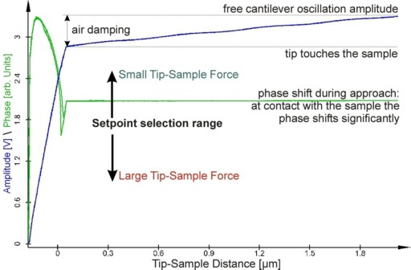

|
参数
|
按照 通用步骤中的步骤操作。AC模式的进一步调整（10.c）如下所述：
典型的起始值为0.05 V（FM）到1 V（NC），取决于悬臂梁类型。对于金色KPFM悬臂梁臂，FM悬臂梁使用1 V。
悬臂梁振荡幅度：FM悬臂梁 1–2 V，NC悬臂梁 1–1.5 V。
设点值在逼近过程中会自动降低。
设点值
此成像模式中的设点值是衰减幅度 A （方程），应选择低于自由幅度 A0 的值。图1所示的幅度-距离曲线说明了自由幅度与AC模式测量中应选择设点值的范围之间的相关性。
低设点值对应于高探针-样品相互作用力。
当使用弹簧常数相对较低的悬臂梁进行AC模式成像时（例如2.8 N/m），由于杠杆和表面之间的空气压缩，悬臂梁的自由幅度在探针接触表面之前会略微下降，如图1所示。

图1：相位（绿色）和幅度（蓝色）作为探针-样品距离的函数。还指示了设点值选择的影响。
更多信息：
反馈设置、 频率扫描、 数据通道（锁相R, 锁相Phi, 形貌, 反馈）
如果在自动共振期间未正确找到悬臂梁的共振频率，请检查以下几点：